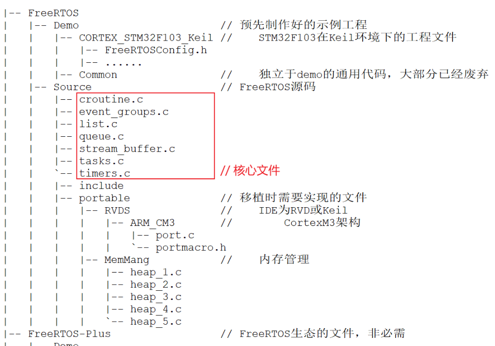

FreeRTOS
[toc]
单片机系统
单片机系统中，一般为裸机系统和多任务系统。
裸机系统中的轮训系统
伪代码：
int main(void)
{
/* 硬件相关初始化 */
HardWareInit();
/* 无限循环 */
for (;;) {
/* 处理事情1 */
DoSomething1();
/* 处理事情2 */
DoSomething2();
/* 处理事情3 */
DoSomething3();
}
}
不适用于有外部事件驱动的情况，按个按钮，在3中去读取信号，如果执行到1，花费很久才到3，按键信号都已经释放了，没采集到。
裸机系统中的前后台系统
伪代码：
int flag1 = 0;
int flag2 = 0;
int flag3 = 0;
int main(void)
{
/* 硬件相关初始化 */
HardWareInit();
/* 无限循环 */
for (;;)
{
if (flag1)
{
/* 处理事情1 */
DoSomething1();
}
if (flag2)
{
/* 处理事情2 */
DoSomething2();
}
if (flag3)
{
/* 处理事情3 */
DoSomething3();
}
}
}
void ISR1(void)
{
/* 置位标志位 */
flag1 = 1;
/* 如果事件处理时间很短，则在中断里面处理
如果事件处理时间比较长，在回到前台处理 */
DoSomething1();
}
void ISR2(void)
{
/* 置位标志位 */
flag2 = 1;
/* 如果事件处理时间很短，则在中断里面处理
如果事件处理时间比较长，在回到前台处理 */
DoSomething2();
}
void ISR3(void)
{
/* 置位标志位 */
flag3 = 1;
/* 如果事件处理时间很短，则在中断里面处理
如果事件处理时间比较长，在回到前台处理 */
DoSomething3();
}
中断为前台，main循环为后台。
这样按键中断就不会丢失了。
多任务系统
伪代码：
int flag1 = 0;
int flag2 = 0;
int flag3 = 0;
int main(void)
{
/* 硬件相关初始化 */
HardWareInit();
/* OS初始化 */
RTOSInit();
/* OS启动，开始多任务调度，不再返回 */
RTOSStart();
}
void ISR1(void)
{
/* 置位标志位 */
flag1 = 1;
}
void ISR2(void)
{
/* 置位标志位 */
flag2 = 2;
}
void ISR3(void)
{
/* 置位标志位 */
flag3 = 1;
}
voidDoSomething1(void)
{
/* 无限循环，不能返回 */
for (;;)
{
/* 任务实体 */
if (flag1)
{
}
}
}
voidDoSomething2(void)
{
/* 无限循环，不能返回 */
for (;;)
{
/* 任务实体 */
if (flag2)
{
}
}
}
voidDoSomething3(void)
{
/* 无限循环，不能返回 */
for (;;)
{
/* 任务实体 */
if (flag3)
{
}
}
}
加入任务优先级，高优先级任务会被先执行，相比前后台系统，多任务系统的 实时性又被提高了。
多个无限不返回的小程序，各自工作，由OS来调度。
| 模型 | 事件响应 | 事件处理 | 特点 | 实时性 |
|---|---|---|---|---|
| 轮询系统 | 主程序 | 主程序 | 轮询响应事件，轮询处理事件 | 弱 |
| 前后台系统 | 中断 | 主程序 | 实时响应事件，轮询处理事件 | 中 |
| 多任务系统 | 中断 | 任务 | 实时响应事件，实时处理事件 | 强 |
主要文件

| FreeRTOS/Source/下的文件 | 作用 |
|---|---|
| tasks.c | 必需，任务操作 |
| list.c | 必需，列表 |
| queue.c | 基本必需，提供队列操作、信号量(semaphore)操作 |
| timer.c | 可选，software timer |
| event_groups.c | 可选，提供event group功能 |
| croutine.c | 可选，过时了 |
内存管理
没有c库，所以malloc free不能使用。要自己实现内存管理。
FreeRTOS中内存管理的接口函数为：pvPortMalloc 、vPortFree，对应于C库的malloc、free。
源代码汇总提供了5中实现，可以自己选择。
| 文件 | 优点 | 缺点 |
|---|---|---|
| heap_1.c | 分配简单，时间确定 | 只分配，不回收 |
| heap_2.c | 动态分配，最佳匹配 | 碎片，时间不定 |
| heap_3.c | 调用标准库函数 | 速度慢，时间不定 |
| heap_4.c | 相邻空闲内存可合并 | 可解决碎片问题，时间不定 |
| heap_5.c | 在heap_4基础上支持分隔的内存块 | 可解决碎片问题，时间不定 |
配置的宏定义 configAPPLICATION_ALLOCATED_HEAP
任务管理
有多少个任务就有多少个栈。
#define TASK1_STACK_SIZE 128(1)
StackType_t Task1Stack[TASK1_STACK_SIZE];(1)
#define TASK2_STACK_SIZE 128
StackType_t Task2Stack[TASK2_STACK_SIZE];
portmacro.h
#ifndef PORTMACRO_H
#define PORTMACRO_H
/* 包含标准库头文件 */
#include"stdint.h"
#include"stddef.h"
/* 数据类型重定义 */
#define portCHAR char
#define portFLOAT float
#define portDOUBLE double
#define portLONG long
#define portSHORT short
#define portSTACK_TYPE uint32_t
#define portBASE_TYPE long
typedef portSTACK_TYPE StackType_t;
typedeflong BaseType_t;
typedefunsigned long UBaseType_t;
#endif/* PORTMACRO_H */
创建任务有两种方式：
- 一种是在main里，挨个创建任务，最后开启调度器；
- 另一种是在main里只创建一个任务，在这个任务中去创建其他任务，都创建好了以后，将主任务删除，最后开启调度器。
任务创建
BaseType_t xTaskCreate( TaskFunction_t pxTaskCode, // 函数指针, 任务函数
const char * const pcName, // 任务的名字
const configSTACK_DEPTH_TYPE usStackDepth, // 栈大小,单位为word,10表示40字节
void * const pvParameters, // 调用任务函数时传入的参数
UBaseType_t uxPriority, // 优先级
TaskHandle_t * const pxCreatedTask ); // 任务句柄, 以后使用它来操作这个任务
创建任务函数，在这里面创建任务，最后将自己删除。
创建子任务时候，在临界区内创建。
临界段用一句话概括就是一段在执行的时候不能被中断的代码段。
那么什么情况下临界段会被打断？一个是系统调度，还有一个就是外部中断。在FreeRTOS，系统调度，最终也是产生PendSV中断，在 PendSV Handler里面实现任务的切换，所以还是可以归结为中断。既然这样，FreeRTOS对临界段的保护最终还是回到对中断的开和关的控制。
看样子就是屏蔽所有中断，“我创建任务的时候，什么中断都不处理”。
/**
* @brief freertos first creat task
* @note This function is used to creat app task and delect self.
* @param *p
* @param None
* @retval None
*/
static void creat_task(void *p)
{
os_printf("%s", __FUNCTION__);
int cnt = 0;
/* creat app task in this 在这里创建应用任务 */
taskENTER_CRITICAL();
extern int app_init(void);
app_init();
taskEXIT_CRITICAL();
/* creat app task in this 在这里创建应用任务 */
/* delay task 延时退出，并删除本任务 */
while(1){
os_printf("this is creat task:idle-%d", cnt++);
vTaskDelay(1000);
if (cnt >= 10){
break;
}
}
os_printf("delete creat task");
vTaskDelete(xTask_creat);
}